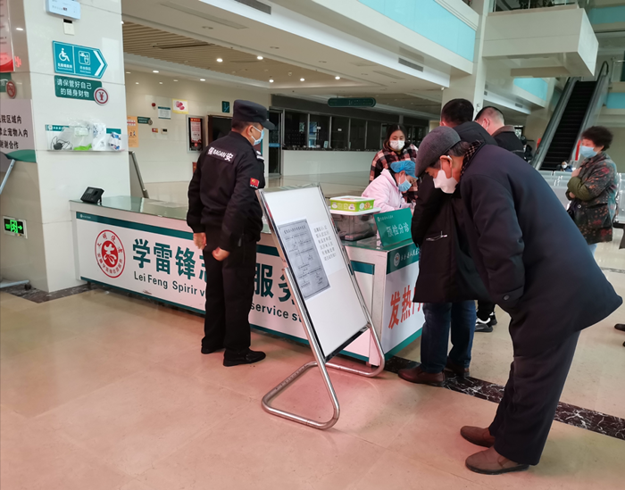
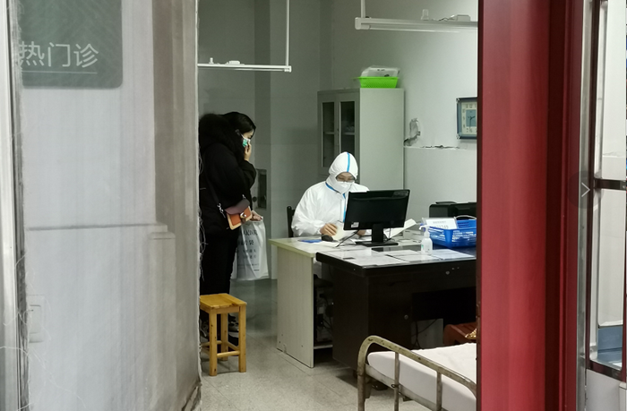

直击肺炎疫情下的武汉、北京、香港
原文链接 备份链接 ********** *************协和医院发热门诊门口，排队患者人数较多，约为50多人，已经从门诊楼内排到了楼外的人行道上，一旁的输液室则有20多人排队。一位未佩戴口罩的患者进入楼内，立刻有医护人员向其发 …
“疫情”中的安徽马鞍山：医院设发热门诊分诊处、口罩脱销、景点暂停开放
2020-01-25 21:10 作者：夏治斌 石英婧 来源：中国经营网
本报记者 夏治斌 石英婧 马鞍山 上海报道
“今天早上看到（马鞍山）有确诊病例，我们就在家人群里跟所有亲戚都说今年就不拜年不走动了，等熬过这个特殊时期大家再聚，我觉得每个人把自己保护好了就是在给社会做贡献了。”1月25日，即鼠年大年初一，安徽马鞍山人夏安（化名）向《中国经营报》记者如上说道。
按照往年的习惯，每年的大年初一，夏安就会开始走亲访友，但今年新型冠状病毒疫情还在肆虐，“疫情阴霾”之下，记者身边包括夏安在内的众多亲朋好友，都认识到情况的严峻性，尽量减少不必要外出的频次，即便是出门大部分人也佩戴了口罩。
一位当涂县乌溪镇的电信工作人员王宇（化名）告诉记者，考虑到现在的疫情现状，大家的卫生意识都提高了，公司也要求大家出去做安装宽带等业务，都必须佩戴口罩。“戴口罩既能让自己心安，也能让客户放心。”

1月25日，当涂县乌溪镇的电信工作人员王宇佩戴口罩外出工作（受访者提供）
自武汉市卫健委2019年12月31日首次公告发现不明肺炎病例至今，已经整整过去了25天。

安徽省卫健委消息显示，1月24日0～24时，安徽省新增报告新型冠状病毒感染的肺炎确诊病例24例。其中合肥市4例、铜陵市3例、安庆市3例、马鞍山市4例、阜阳市5例、亳州市3例、芜湖市1例、滁州市1例。铜陵市、马鞍山市、芜湖市为首次病例报告。在新增的24例确诊病例中，22例有武汉居住史和旅行史，2例为聚集性传播病例。
部分药店口罩脱销
1月25日，记者来到当涂街道上的多家药店，多位药店工作人员称，店内的所有口罩早在三四天前便已脱销。由于现在是过年期间，物流不通，因此目前店内口罩暂时没法供应。
随后，记者来到马鞍山当涂东站，只见在候车大厅大屏幕在实时播放新型冠状病毒的情况。现场的检票员，包括车站的安保人员、乘客均佩戴口罩。

1月25日，当涂东站候车厅内大屏幕播放如何正确戴口罩。夏治斌/摄影
与此同时，记者来到当涂县人民医院综合病房大楼一楼，一进大厅，便可看见发热门诊预检分诊处，室内人员同样都佩戴口罩，现场有医生人员在给患者测量体温。据医院内一位工作人员介绍，上述分诊处是最近四五天设置的，主要就是为了筛查发热病人。

1月25日，当涂县人民医院医务人员在给患者测体温。夏治斌/摄影
医院内摆放的发热病人就诊流程显示，如若就诊患者发热，护士会赠送外科口罩，并前往发热门诊就诊。如进一步诊断显示疑似人感染新型冠状病毒肺炎则就要佩戴N95口罩，再进入发热病人隔离病房，进行隔离、查体、流调，做好个人防护。
此外，在就诊示意图旁边还有一则提示，要求近期从武汉回来或者和武汉回来人员有接触史者需要主动告知医护人员。

当涂县人民医院发热门诊医护人员穿戴有防护服坐诊。夏治斌/摄影
记者现场跟随指示牌来到位于感染科的发热门诊处，在发热门诊的医生均穿戴防护服。一位工作人员告诉记者，现在的发热门诊是最近新设的。
记者获取的一份马鞍山市卫健委文件显示，马鞍山市第四人民医院（即马鞍山市传染病医院）为市级定点医院。该医院的一位工作人员向记者表示：“如果是马鞍山确诊的病例，基本上都会送到这里来收治。”另有一位马鞍山市医护人员告诉记者，其所在医院的发热门诊医护人员全部取消了春节假期，都在工作。
多家景点暂停对外开放
记者了解到，1月23日深夜，安徽省卫生健康委便发出了《动员令》，宣布全省卫生健康系统取消2020年春节放假。各市、县卫生健康委、医疗卫生机构以及疾控中心在春节期间将照常上班。
1月24日，根据《安徽省突发公共卫生事件应急预案》《安徽省新型冠状病毒感染的肺炎疫情防控应急预案》，结合安徽省当前新型冠状病毒感染的肺炎疫情防控形势，安徽省新型冠状病毒感染的肺炎疫情防控应急指挥部决定，启动安徽省重大公共卫生事件一级响应。
与此同时，安徽省教育厅对全省教育系统做好新型冠状病毒感染的肺炎疫情防控工作作出部署：寒假期间，各地各高校要对留校学生发布预警提醒，非必要原因不外出，尤其不到人流量大的场所逗留；严格控制外来人员随意进入校园，取消各种旅游团组进入校园。各地各校要提前对春季开学有关情况做出科学研判，必要时对学校教学安排及相关工作做出调整。
为应对疫情，马鞍山市也采取了一系列的防控措施，采石矶景区从2020年1月25日起暂停对外开放，具体开放时间另行通知。当涂县李白墓园暂停对外开放，具体开放时间待定（原定大年初五免费开放也同时取消）。
除此之外，春节放假期间（除夕~正月初六）马鞍山市雨山区小九华寺、含山县褒禅寺、太湖禅寺、和县凤林禅寺、当涂县甑山禅林、花山区临溪寺等佛教场所暂停对外开放，外来人员禁止进入寺院。
另在2020年1月11日后来自武汉以及途经武汉至马鞍山市的所有人员，应当到村、社区进行登记。自觉在家自我观察不少于14天；如有发热、呼吸道感染症状的，应立即前往就近的二级以上医疗机构发热门诊规范治疗。
（编辑：石英婧 校对：彭玉凤）
* 除《中国经营报》署名文章外，其他文章为作者独立观点，不代表中国经营网立场。
* 未经本网授权，任何单位及个人不得转载、摘编或以其它方式使用上述作品，违者将被追究法律责任。
* 凡本网注明“来源：中国经营网” 或“来源：中国经营报-中国经营网”的所有作品，版权均属于中国经营网（本网另有声明的除外）。
* 如因作品内容、版权和其它问题需要同本网联系的，请在30日内进行。
* 有关作品版权事宜请联系：010-88890046 邮箱：banquan@cbnet.com.cn
原文链接 备份链接 ********** *************协和医院发热门诊门口，排队患者人数较多，约为50多人，已经从门诊楼内排到了楼外的人行道上，一旁的输液室则有20多人排队。一位未佩戴口罩的患者进入楼内，立刻有医护人员向其发 …
原文链接 备份链接 武汉各大医院发热门诊的紧张态势已有一周，七家定点医院启动才两天已被压到极限。 武汉不缺顶级医院，不缺顶级专家，不缺顶级医疗能力，缺的是公共卫生防控能力、行政效率和疫情处理流程。 在患者和大医疗机构之间，未见到基层 …
原文链接 备份链接 这注定是一个难捱的春节。 截至1月23日24时， 全国确诊新型肺炎病例830例， 死亡25例。 截至1月23日晚，中国新型肺炎疫情地图（来源：丁香医生） 同时，国际确诊案例也陆续出现。 截至1月23日，数据如下： 泰 …
原文链接 备份链接 记者/韩谦 魏晓涵 李佳楠 张帆 颜星悦 佟晓宇 梁婷 李东 郭慧敏 实习记者/陈威敬 龙天音 编辑/杨宝璐 宋建华 被确诊为河南省首例新型冠状病毒感染的肺炎患者，曾于1月8日在太康县人民医院治疗 国家卫健委消息，截 …
原文链接 备份链接 你怀着怎样的心情，度过了2020年的大年夜？ 在得知武汉封城的新闻后，三明治紧急发起了每日书特别版《武汉日常》，邀请人在武汉和家乡在武汉的朋友，一起来用文字忠实记录他们在这个特殊时期的生活日常。 招募一经发出，就有近百 …